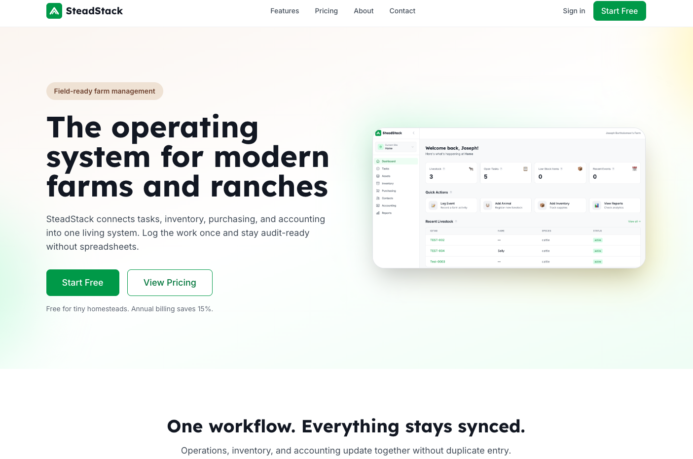

Joseph Bartholomew
About Me
My name is Joseph Bartholomew, but I usually go by Joey. I live in Ohio and I am learning web development. I am especially interested in building web applications and growing my skills in HTML, CSS, JavaScript, React, and full-stack development. I enjoy working on creative business ideas and learning how to build real projects from the ground up.
My Interests

I enjoy technology, entrepreneurship, and creating useful tools for real people. I also like studying design, improving my coding skills, and working on future software ideas. The image above is of a software I've built called SteadStack.com. This website is for Homesteaders who want to manage all the parts of it using software. This course will help me strengthen the fundamentals of web development so I can build better websites and applications.